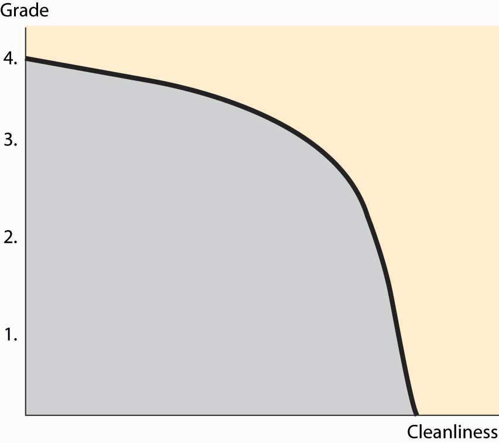
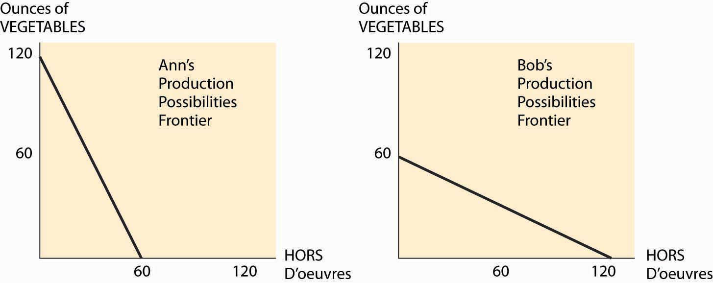
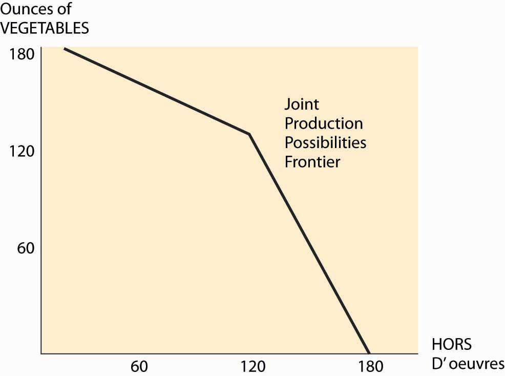

Formally, the set of production possibilitiesThe collection of feasible outputs of an individual, group or society, or country. is the collection of “feasible outputs” of an individual, group or society, or country. You could spend your time cleaning your apartment, or you could study. The more time you devote to studying, the higher your grades will be, but the dirtier your apartment will be. This is illustrated, for a hypothetical student, in Figure 6.1 "The production possibilities frontier".
The production possibilities set embodies the feasible alternatives. If you spend all your time studying, you could obtain a 4.0 (perfect) grade point average (GPA). Spending an hour cleaning reduces the GPA, but not by much; the second hour reduces it by a bit more, and so on.
The boundary of the production possibilities set is known as the production possibilities frontierThe boundary of the production possibilities set.. This is the most important part of the production possibilities set because, at any point strictly inside the production possibilities set, it is possible to have more of everything, and usually we would choose to have more.To be clear, we are considering an example with two goods: cleanliness and GPA. Generally there are lots of activities, like sleeping, eating, teeth brushing, and so on; the production possibilities frontier encompasses all of these goods. Spending all your time sleeping, studying, and cleaning would still represent a point on a three-dimensional frontier. The slope of the production possibilities frontier reflects opportunity cost because it describes what must be given up in order to acquire more of a good. Thus, to get a cleaner apartment, more time or capital, or both, must be spent on cleaning, which reduces the amount of other goods and services that can be had. For the two-good case in Figure 6.1 "The production possibilities frontier", diverting time to cleaning reduces studying, which lowers the GPA. The slope dictates how much lost GPA there is for each unit of cleaning.
Figure 6.1 The production possibilities frontier
One important feature of production possibilities frontiers is illustrated in Figure 6.1 "The production possibilities frontier": They are concave toward the origin. While this feature need not be universally true, it is a common feature, and there is a reason for it that we can see in the application. If you are only going to spend an hour studying, you spend that hour doing the most important studying that can be done in an hour, and thus get a substantial improvement in grades for the hour’s work. The second hour of studying produces less value than the first, and the third hour less than the second. Thus, spending more on something reduces the per-unit value produced. This is the principle of Diminishing marginal returnsThe principle that spending more on something reduces the per-unit value produced.. Diminishing marginal returns are like picking apples. If you are only going to pick apples for a few minutes, you don’t need a ladder because the fruit is low on the tree; the more time spent, the fewer apples per hour you will pick.
Consider two people, Ann and Bob, getting ready for a party. One is cutting up vegetables; the other is making hors d’oeuvres. Ann can cut up 2 ounces of vegetables per minute, or make one hors d’oeuvre in a minute. Bob, somewhat inept with a knife, can cut up 1 ounce of vegetables per minute, or make 2 hors d’oeuvres per minute. Ann and Bob’s production possibilities frontiers are illustrated in Figure 6.2 "Two production possibilities frontiers", given that they have an hour to work.
Since Ann can produce 2 ounces of chopped vegetables in a minute, if she spends her entire hour on vegetables, she can produce 120 ounces. Similarly, if she devotes all her time to hors d’oeuvres, she produces 60 of them. The constant translation between the two means that her production possibilities frontier is a straight line, which is illustrated on the left side of Figure 6.2 "Two production possibilities frontiers". Bob’s is the reverse—he produces 60 ounces of vegetables or 120 hors d’oeuvres, or something on the line in between.
Figure 6.2 Two production possibilities frontiers
For Ann, the opportunity cost of an ounce of vegetables is half of one hors d’oeuvre—to get one extra ounce of vegetables, she must spend 30 extra seconds on vegetables. Similarly, the cost of one hors d’oeuvre for Ann is 2 ounces of vegetables. Bob’s costs are the inverse of Ann’s—an ounce of vegetables costs him two hors d’oeuvres.
Figure 6.3 Joint PPF
What can Bob and Ann accomplish together? The important insight is that they should use the low-cost person in the manufacture of each good, when possible. This means that if fewer than 120 ounces of vegetables will be made, Ann makes them all. Similarly, if fewer than 120 hors d’oeuvres are made, Bob makes them all. This gives a joint production possibilities frontier as illustrated in Figure 6.3 "Joint PPF". Together, they can make 180 of one and none of the other. If Bob makes only hors d’oeuvres, and Ann makes only chopped vegetables, they will have 120 of each. With fewer than 120 ounces of vegetables, the opportunity cost of vegetables is Ann’s, and is thus half an hors d’oeuvre; but if more than 120 are needed, then the opportunity cost jumps to two.
Now change the hypothetical slightly. Suppose that Bob and Ann are putting on separate dinner parties, each of which will feature chopped vegetables and hors d’oeuvres in equal portions. By herself, Ann can only produce 40 ounces of vegetables and 40 hors d’oeuvres if she must produce equal portions. She accomplishes this by spending 20 minutes on vegetables and 40 minutes on hors d’oeuvres. Similarly, Bob can produce 40 of each, but by using the reverse allocation of time.
By working together, they can collectively have more of both goods. Ann specializes in producing vegetables, and Bob specializes in producing hors d’oeuvres. This yields 120 units of each, which they can split equally to have 60 of each. By specializing in the activity in which they have lower cost, Bob and Ann can jointly produce more of each good.
Moreover, Bob and Ann can accomplish this by trading. At a “one for one” price, Bob can produce 120 hors d’oeuvres, and trade 60 of them for 60 ounces of vegetables. This is better than producing the vegetables himself, which netted him only 40 of each. Similarly, Ann produces 120 ounces of vegetables and trades 60 of them for 60 hors d’oeuvres. This trading makes them both better off.
The gains from specialization are potentially enormous. The grandfather of economics, Adam Smith, wrote about specialization in the manufacture of pins:
One man draws out the wire; another straights it; a third cuts it; a fourth points it; a fifth grinds it at the top for receiving the head; to make the head requires two or three distinct operations; to put it on is a peculiar business; to whiten the pins is another; it is even a trade by itself to put them into the paper; and the important business of making a pin is, in this manner, divided into about eighteen distinct operations, which, in some manufactories, are all performed by distinct hands, though in others the same man will sometimes perform two or three of them.Adam Smith, An Inquiry into the Nature and Causes of the Wealth of Nations, originally published in 1776, released by the Gutenberg project, 2002.
Smith goes on to say that skilled individuals could produce at most 20 pins per day acting alone; but that, with specialization, 10 people could produce 48,000 pins per day, 240 times as many pins per capita.
Consider two consumers and two goods, x and y. Consumer 1 has utility u1(x1, y1) = x1 + y1 and consumer 2 has utility u2(x2, y2) = min {x2, y2}. Consumer 1 has an endowment of (1, 1/2) and consumer 2’s endowment is (0, 1/2).
For Questions 4 to 7, consider an orange juice factory that uses, as inputs, oranges and workers. If the factory uses x pounds of oranges and y workers per hour, it produces gallons of orange juice; T = 20x0.25y0.5.